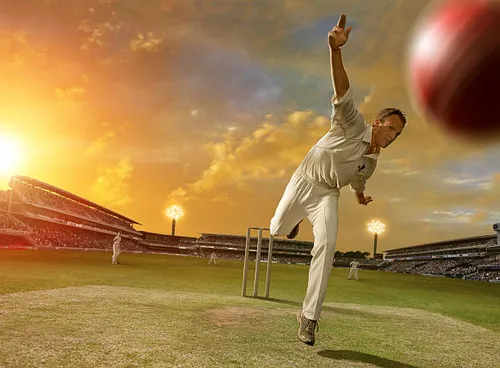

My journey in computer programming started with a fascination for how software can shape and enhance various aspects of our lives. As a student, I've delved into programming languages such as C#, javascript, etc. and gained hands-on experience in areas like developing webpage.
Qualifications

My Hobbies
Travelling is fun:

Traveling is a popular hobby that involves exploring new places, cultures, and experiences. It offers opportunities for adventure, learning, relaxation, and making new connections. Whether it's discovering historical landmarks, trying local cuisine, or embarking on adrenaline-fueled activities, traveling provides a diverse range of experiences that appeal to people worldwide. Additionally, it allows enthusiasts to indulge in hobbies like photography, culinary exploration, and nature appreciation.
Playing Cricket:
Playing cricket is more than just a hobby for me; it's a passion that ignites my spirit and connects me deeply with the game's rich history and excitement. Every time I step onto the field, whether it's a neatly manicured pitch or a dusty street corner, I feel a rush of adrenaline and anticipation. From the crack of the bat to the swish of the ball through the air, cricket encapsulates moments of pure skill, strategy, and teamwork. Whether I'm batting, bowling, or fielding, each aspect requires its own set of techniques and tactics, keeping me engaged and challenged. But beyond the physicality of the game, cricket fosters a sense of camaraderie and belonging. The shared victories, the close defeats, and the countless hours spent practicing together forge bonds that extend beyond the boundary ropes.
Listening to music:
Listening to music isn't just a hobby for me; it's a form of therapy, a means of expression, and a constant source of inspiration. Whether I'm unwinding after a long day, getting lost in the melodies during a commute, or simply seeking solace in the rhythm, music has an uncanny ability to uplift my spirits and transport me to different realms. Each song is a story waiting to be told, a journey through emotions, experiences, and ideas. From the soothing harmonies of classical compositions to the electrifying beats of rock and roll, every genre offers its own unique flavor, catering to my mood and preferences. Moreover, music serves as a universal language, bridging gaps and fostering connections across cultures and communities. It has the power to evoke memories, evoke emotions, and create a sense of belonging, making me feel part of something greater than myself.